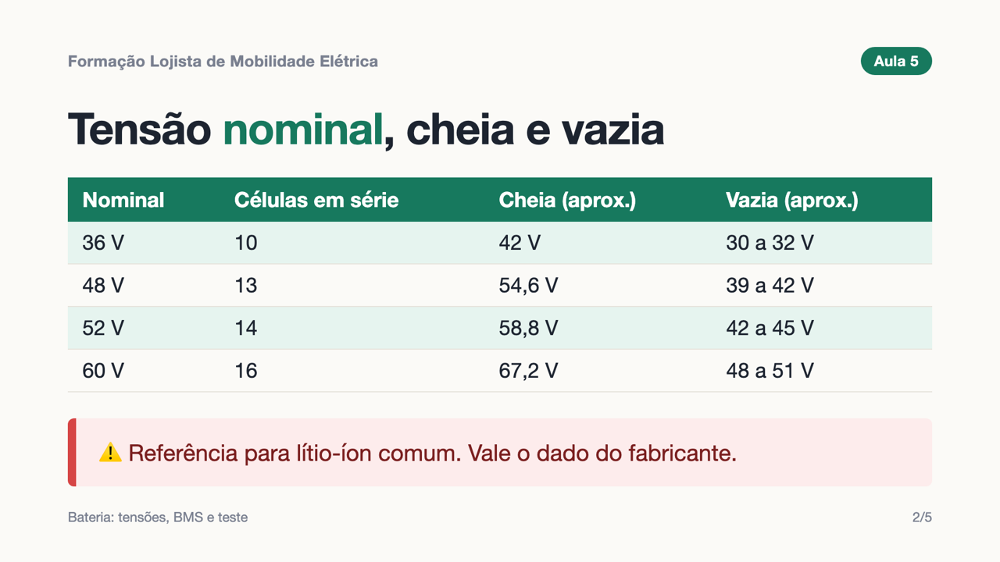

Diagnóstico elétrico com método, segurança com baterias de lítio, preço certo do serviço e um plano de revisão que traz o cliente de volta. Para lojas de patinete, bike e scooter elétricos.
QUERO A FORMAÇÃO
A venda do veículo acontece uma vez. Pneu, freio, revisão e bateria voltam todo ano. A formação organiza a sua oficina para que esse serviço vire lucro e fidelidade, e não dor de cabeça.
Na aula de precificação, você calcula a sua hora técnica com os seus custos. Veja o exemplo da aula, com números redondos:
| Custos fixos da oficina | R$ 2.000 |
| Técnico (salário e encargos) | R$ 3.500 |
| Margem desejada | R$ 1.500 |
| Horas produtivas no mês | 100 h |
| Hora técnica | R$ 70 |
Quem cobra R$ 40 a hora "porque todo mundo cobra" trabalha no prejuízo sem perceber. A formação ensina a fazer essa conta e a montar a tabela de preços dos serviços que mais chegam na sua bancada.
Para donos de loja de patinete, bike e scooter elétricos, técnicos de bancada e quem quer abrir uma oficina de mobilidade elétrica. Também serve para oficinas de bicicleta que estão começando a receber modelos elétricos.
Não. As aulas explicam cada medição do zero, com o multímetro. Saber usar ferramentas e ter uma bancada já ajuda bastante.
Ensina a testar a bateria sem abrir o pacote, reconhecer quando ela é um risco e guardar, carregar e descartar com segurança. Abrir pacotes e trocar células exige treinamento e estrutura próprios, e a formação mostra quando encaminhar para um especialista.
Sim. O método vale para os veículos com motor de cubo, controlador e bateria de lítio, que são a maioria do mercado. Os valores exatos de cada modelo estão no manual do fabricante, e a apostila tem uma tabela para você anotar os modelos que atende.
Logo após o pagamento, você recebe por e-mail o acesso à área de membros da Kiwify, com as aulas e a apostila.
Pode. Assista junto com quem trabalha na bancada. Só não é permitido compartilhar o acesso ou revender o conteúdo.